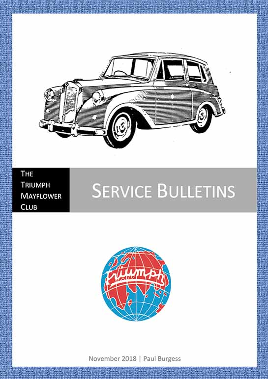

Service Bulletins
The latest addition to our technical documentation archive
· 12th February 2019
We’ve just added a new document to the technical documentation section containing a large collection of official Mayflower service bulletins from Triumph. Paul has been doing a wonderful job of cataloguing all of these, along with the many other bits of documentation and print-media memorabilia in this section, so a huge thanks once again, Paul!
These bulletins are currently dated from 1950–53 and the list of titles is as follows:
- Throttle control return spring
- Front wheel bearings
- Mayflower front suspension rebound cables
- Auxiliary drop arm
- Cold starting
- Rear axle oil level
- Lockheed brake master cylinder
- Body & underframe repair manual
- Coil to distributor HT cable
- Engine main bearing caps
- Flywheel ring gear & starter motor
- Body & underframe repair manual – detail № 500737
- Service instruction manual
- Modified carburettor jets
- Engine manifold gasket
- Removal & installation of starter motor
- Inlet & exhaust manifold packing
- Steering unit attachment to trunnion bracket
- Underframe sub-assembly
- Loss of oil from rear axle cover plate
- Care & maintenance of front suspension rubber bushes
- 3½ Kilowatt heating & ventilating equipment
- Modification to top clutch operating rods
- Self-locking nuts used on steering track & tie rods
- Possible improvements for engines using medium to high octane fuels
- Lockheed stop light switch
- Replacing gear change cross-shaft bearings
- Schonitzer door locks